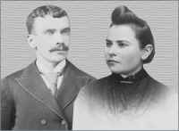
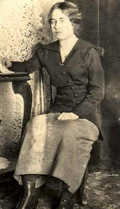
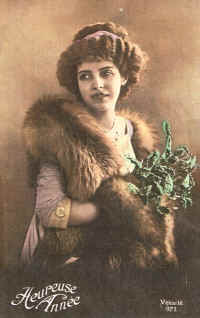

|
Marie-Anna
Caron is born on April 27, 1897, at 54 rue Delinelle in Saint-Henri. Her
parents, Arthur Caron and Alphonsine Gagnon, come from the
Bas-du-Fleuve (the lower St. Lawrence). They married in 1891 in Montréal and already have a
son, Jean, born on October 11, 1893.
Marie-Anna's other brother, Antonio, is born on October 26, 1899. Then,
in 1901, another brother named
Arthur, but he dies the following year.
Marie-Anna's father is a ferblantier (tinsmith).
|

Marie-Anna's
parents
|

Marie-Anna and her brothers
|

Marie-Anna at her first communion
|

Marie-Anna at her
brother Antonio's first communion
|

On October 31,
1904, a great upheaval strikes Marie-Anna's young
life: her father dies at the age of 37. The family
goes on living at 54 Delinelle, St-Henri. It is
from the 1911 census that we learn how Alphonsine made
her living. She gives her trade as "laveuse pour des
particuliers" (laundress for private clients). In other words, she washes other people's linen
at home, starches it if needed, and irons it. Her customers
must have been the single men and the better-off
people of the neighbourhood. Commercial laundries would only appear in the
following decade. In the same census we also learn that
Jean, the eldest son, 17, gives his trade as "chartier" (carter).
He works 60 hours a week, 52 weeks a year, and earned
$350 the year before. Most of this money was surely
handed over to his mother, as was the custom of the time.
 Alphonsine
marries again
on September 13, 1913, to Zénon Laframboise, a carpenter, recently
widowed. She has no doubt known him for some years, since Zénon,
his wife Célina Jasmin and their daughter Marguerite, born in February 1900,
have lived close by, at 455 rue Ste-Émélie, since at least 1908. Alphonsine
and her children move in with
Zénon. Alphonsine
marries again
on September 13, 1913, to Zénon Laframboise, a carpenter, recently
widowed. She has no doubt known him for some years, since Zénon,
his wife Célina Jasmin and their daughter Marguerite, born in February 1900,
have lived close by, at 455 rue Ste-Émélie, since at least 1908. Alphonsine
and her children move in with
Zénon.
Marie-Anna calls Marguerite Laframboise
her "sister", so they have probably been friends for a
long time. When Alphonsine and Zénon marry, the girls are already
teenagers
 Marie-Anna is surely a typical girl of the middle class
in which she grows up.
She receives a good education and
perhaps attends a boarding school run by a community of
nuns, as was the fashion at the time.
There girls were prepared to play their role as wives and mothers
in the Catholic French-Canadian society of the dawning
20th century.
FRIENDS
FOR LIFE
All her life Marie-Anna
will have good friends; some even appear in the group
photos at her children's weddings. Her friendship with one
of them, Imelda Verreault, begins in childhood. Both were born
in 1897 and they are neighbours, Marie-Anna living at no. 54 and
Imelda at no. 63 rue Delinelle.
Imelda is the first to marry, to a Mr. Henri Philippe. In 1916
Marie-Anna sends them her best wishes for the new year and
invites them to her wedding the following month. Mr. Philippe will be the
bookkeeper of the garage of
Rosario, Marie-Anna's husband. Imelda's daughter, Rachel, will marry
Marie-Anna's son Rosaire. Later Imelda will live for many
years at 7078 Des Écores, one of the flats that had once
belonged to Marie-Anna. Imelda dies in 2002 at the age of 104.
|
CARDS SENT BY
MARIE-ANNA TO IMELDA |
|

|

|

|
|
|

|

|
|

Imelda Verreault-Philippe, 1990
|


|